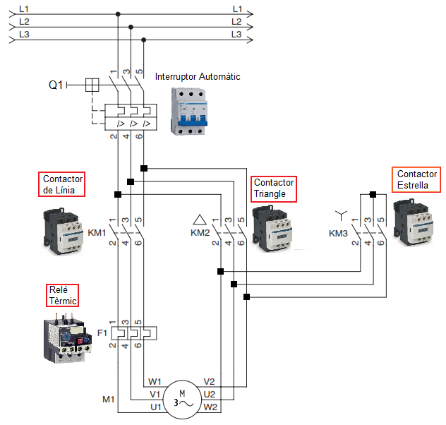
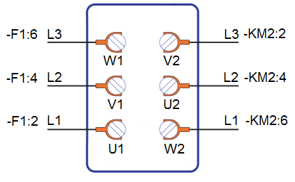
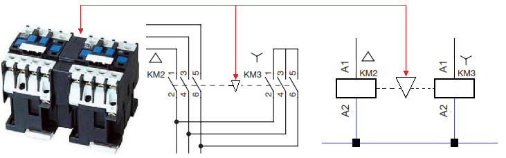
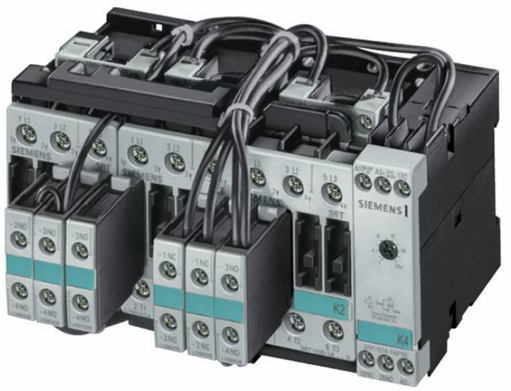

APUNTS IEA
Circuit de Potencia
El circuit de potència, a més de les proteccions (Interruptor Automàtic i Relé Tèrmic), utilitza tres contactors:

- KM1: Contactor de línia, la seva funció es dónar energia elèctrica al motor
- KM2: Contactor que realitza la connexió "Triangle"
- KM3: Contactor que realitza la connexió "Estrella"
| Hem de tindre en compte que en l'arranc "EStrella-Triangle" hem de connectar els sis terminals del motor (hem de retirar les xapes de connexió), i és molt important respectar l'ordre de connexió, ja que si no ho fem, a més de no arrancar, es podria produir un curtcircuit en la connexió "Triangle". |

Seqüència de funcionament
- En el moment de la posada en marxa han d'activar-se els contactors KM1 i KM3. D'aquesta manera el motor queda connectat en "Estrella".
- Al cap de un temps t, es desactiva el contactor KM3, mantenint KM1 activat, i activant KM2. D'aquesta manera el motor queda connectat en "Triangle"
- Cada volta que el motor es pose en marxa, és necessari repetir els pasos anteriors.
- El relé tèrmic es col·loca entre el contactor KM1 i el motor.
Circuit de Potencia

SEGURETAT
En cap cas s'han d'activar al mateix temps els contactors d'estrella i de triangle, ja que es produiria un curtcircuit.
Per evitar aquesta possibilitat entre els contactors Estrella i Triangle, pot existir un enclavament mecànic, que físicament consisteix en una peça adossada entre els dos contactors, que impedeixe que s'activen al mateix temps.

Alguns fabricants disposen de conjunts completament montats amb enclavament mecànic entre els dos contactors "Estrella" i "Triangle"

AVÍS
SSSSSSSSSSSSSSSSSSSSSSSSSSSSSSSSSSSSSSSSSSSSSSSSSSS
Llicenciat sota la Llicència Creative Commons Reconeixement CompartirIgual 4.0